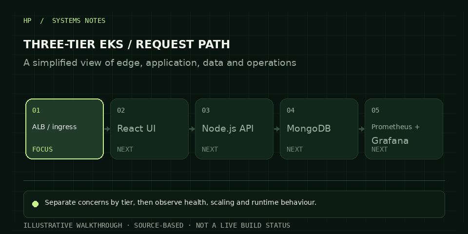

Package an application into separate edge, application and data concerns while keeping infrastructure repeatable and observable.
03 / CASE STUDYENGINEERING NOTES
THREE-TIER APPLICATION / KUBERNETES PLATFORM
Separate the layers. Observe the whole system.
A production-style application layout on Amazon EKS, with React at the edge, a Node.js API, MongoDB persistence and operational dashboards.

ANIMATED WALKTHROUGH · ILLUSTRATIVEOCT 2026
Use Terraform for the cluster and networking layer, ECR for container images, Kubernetes workloads and an AWS load balancer controller.
The repository and CV describe a three-tier React / Node.js / MongoDB deployment on EKS with Terraform and Prometheus/Grafana.
HOW IT FITS TOGETHER
The system, at a glance.
Architecture diagram based on the design documented in the repository.
EKS / THREE-TIER REQUEST PATHOpen repository ↗
01 / EDGEAWS Load BalancerIngress · ALB Controller
↓ ROUTING ↓
02 / APPLICATIONReact UI + Node.js APIKubernetes Deployments / Services
↓ PRIVATE NETWORK ↓
03 / DATAMongoDBapplication persistence
PrometheusGrafanaCluster Autoscaler
Architecture diagram based on the repository. Stop or destroy EKS and load-balancer resources when a demo is finished to control costs.
STEP THROUGH THE DESIGN
A short technical walkthrough.
Use the steps to inspect the order of decisions and the job each stage does.
CURRENT STEP01 / 04
Route at the edge
The AWS Load Balancer Controller routes incoming traffic to Kubernetes services.
ENGINEERING DECISIONS
What matters in this build.
Give each tier one job
The UI, API and database are represented as separate workloads so responsibilities and network paths remain understandable.
Provision infrastructure as code
Terraform keeps the cluster and networking definition versioned and reviewable.
Pair deployment with observability
Prometheus and Grafana provide signals for service health; autoscaling and ingress should be validated against actual load tests.
COST NOTE
Cost is driven by uptime and managed services.
EKS control-plane time, worker compute, EBS volumes, load balancers, NAT Gateway, logs and data transfer can all contribute to cost. An always-on cluster is rarely needed for a portfolio demo. Record the selected node sizes and region in your README, check AWS Pricing Calculator, and destroy the cluster and related resources after evidence capture.
Estimate with AWS Pricing Calculator ↗NEXT STEP
Email Hemanth↗